Conseils
Bien choisir, avant de venir essayer.
À lire chez vous, pour savoir quoi regarder et quoi essayer une fois au magasin.
Selon votre situation
Qu’est-ce qui vous amène ?
-
J’emménage dans mon premier appartement
Le premier soir, où allez-vous dormir et prendre votre repas ? Les autres meubles peuvent se décider une fois sur place.
Choisir mes premiers meubles -
J’ai envie de changement
Vous tenez à votre table, mais vous la voyez à peine tant elle vous est familière. Essayez une autre chaise en bout de table.
Changer autour d’un meuble que j’aime -
On s’installe à deux
Deux buffets pour un seul séjour. Avant de choisir, dites-vous chacun lequel vous auriez du plaisir à retrouver en rentrant.
Faire une place aux meubles de chacun -
Une chambre devient aussi mon bureau
Où ira la chaise du bureau le soir où quelqu’un dormira ici ? Faites l’essai avec le couchage ouvert.
Partager la pièce entre bureau et invités -
J’aménage toute la maison
Sur le plan, placez la table où vous aimeriez déjeuner le dimanche. Le canapé, puis les rangements, trouveront plus facilement leur place.
Aménager ma maison par étapes -
Les chaussures s’accumulent sous l’escalier
Posez côte à côte les paires que vous portez cette semaine. Cette largeur vous donne un premier repère pour choisir l’étagère ou le tiroir du quotidien.
Choisir mon rangement sous escalier
Nos guides
Les questions qu’on nous pose le plus.
-

-
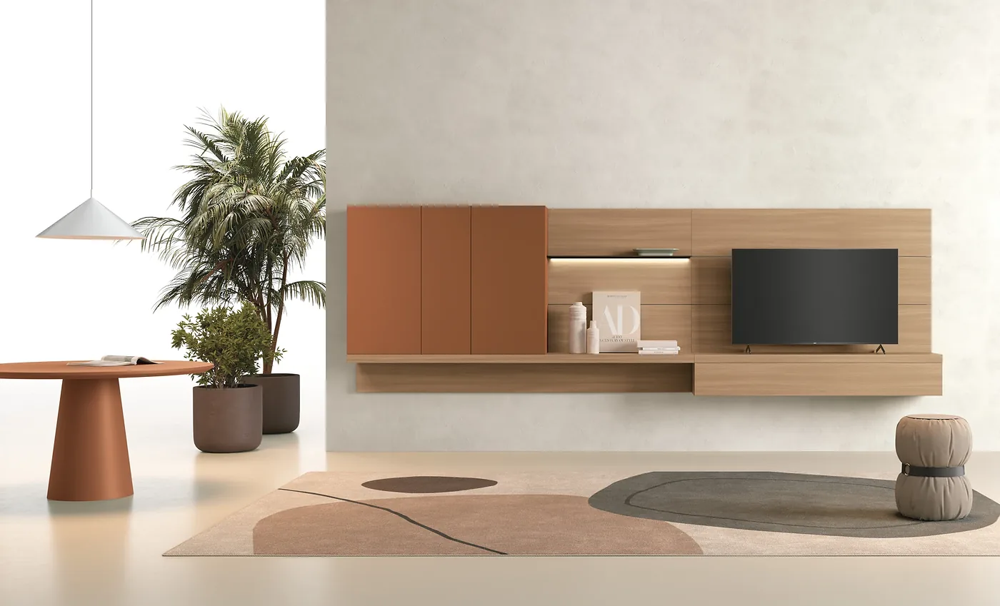
Avant la visite
Mesurer sa pièce – Lire le guide : Avant la visite
-
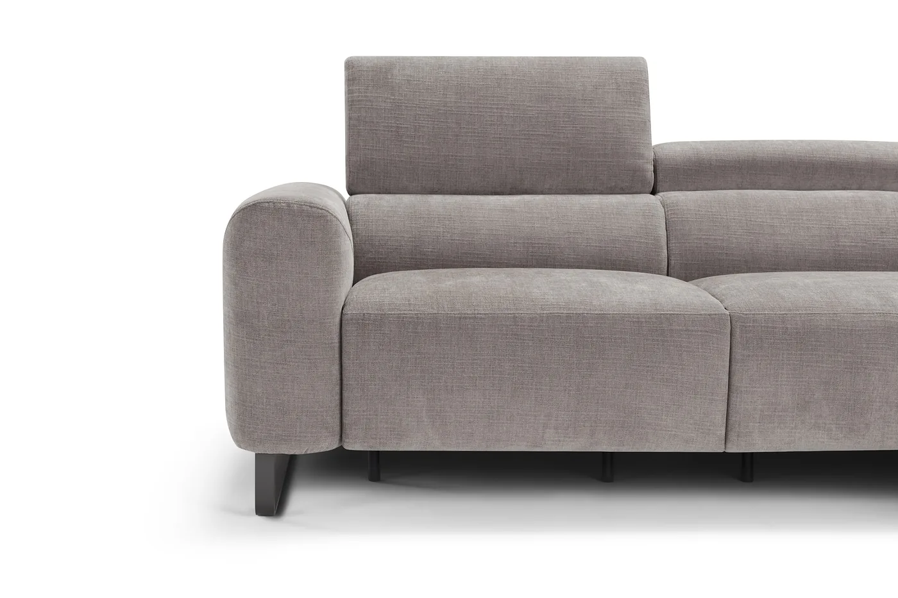
-
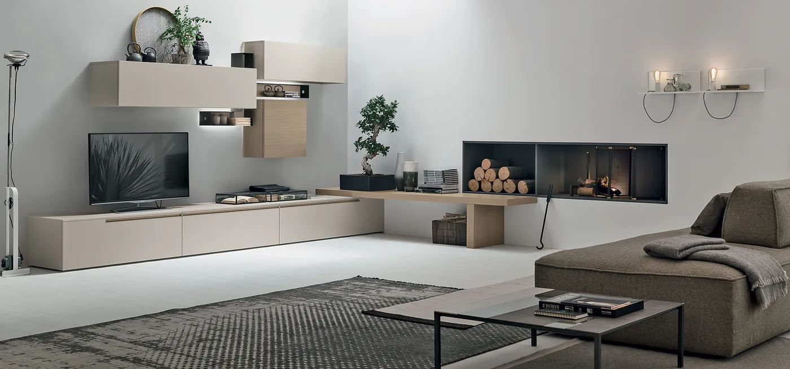
-
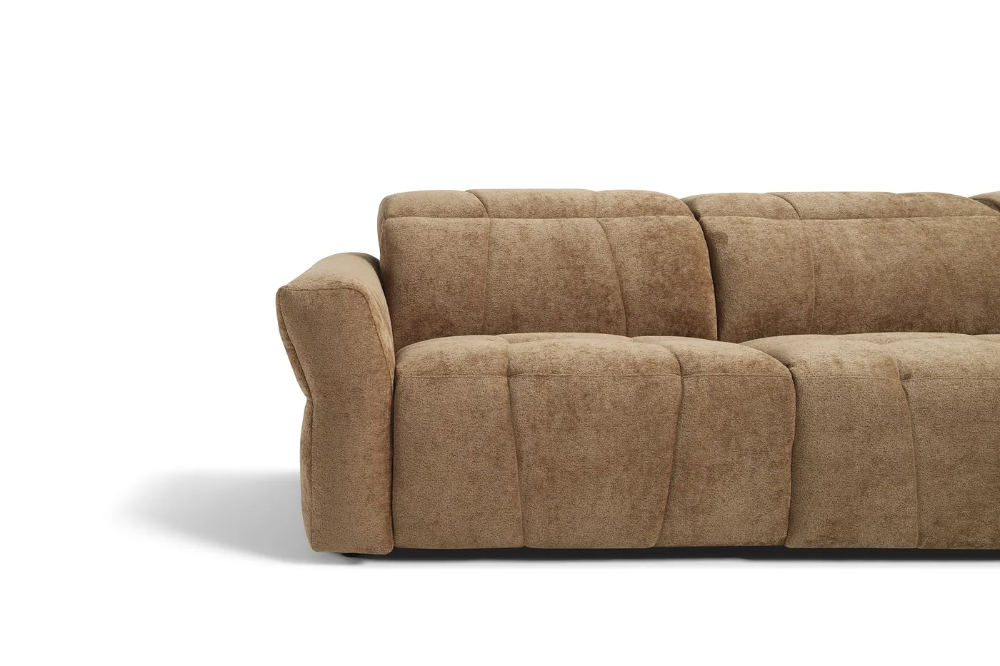
-

-

-
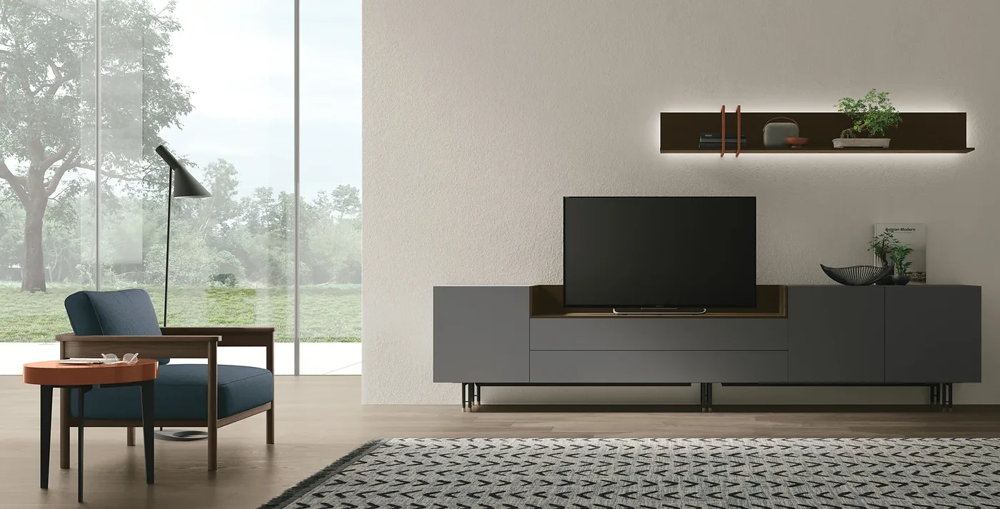
-
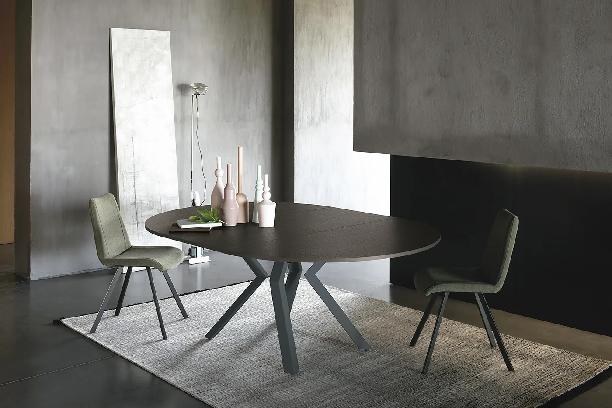
-
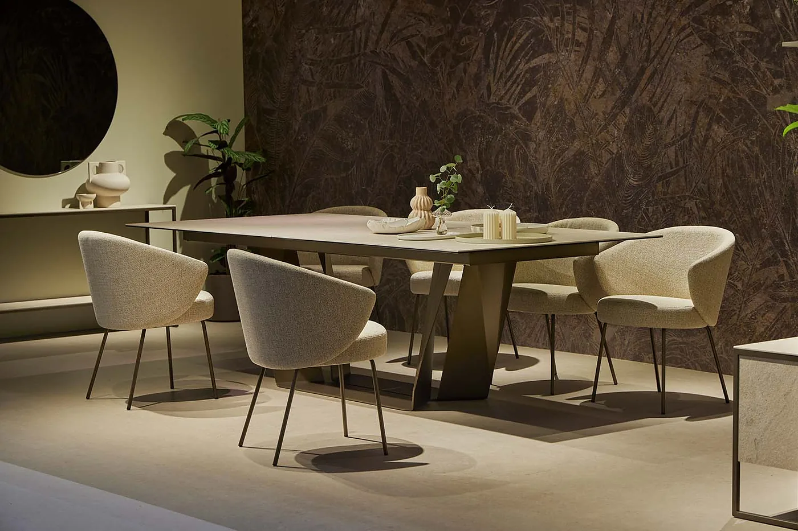
-
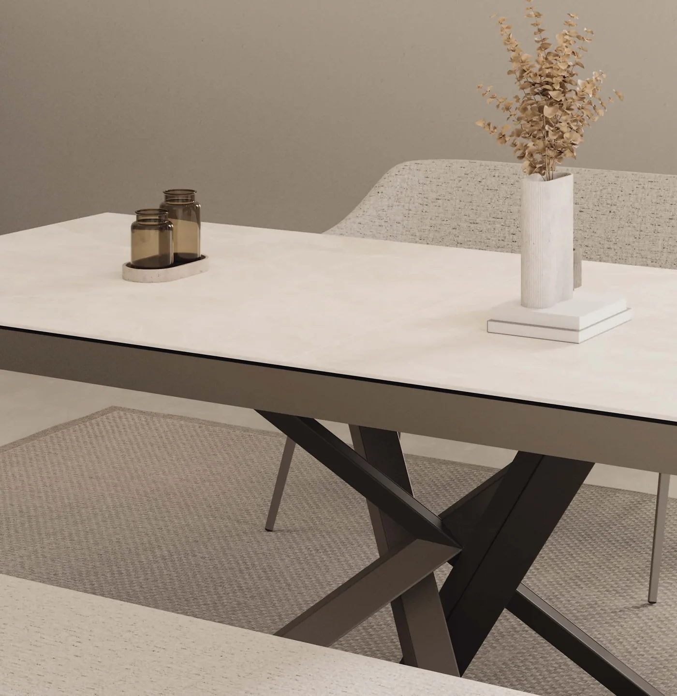
-
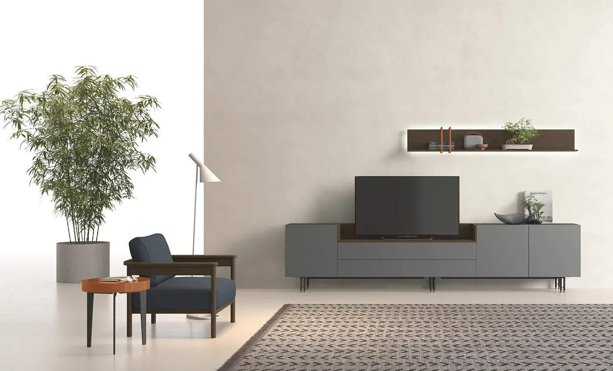
-
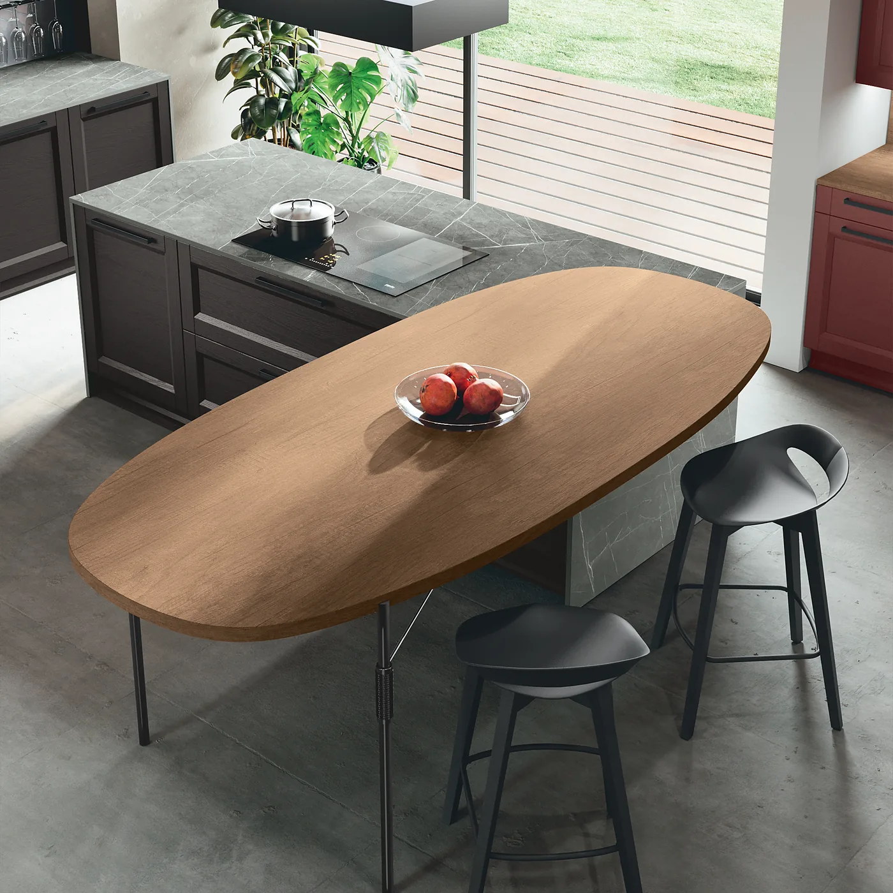
-

-
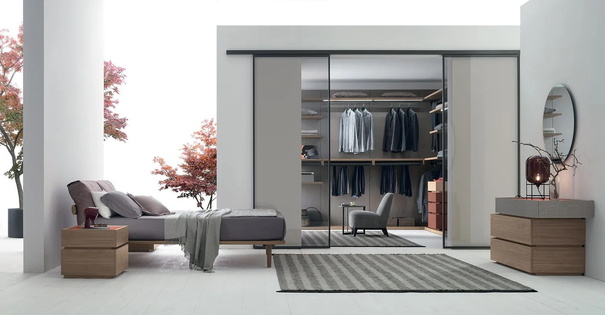
-
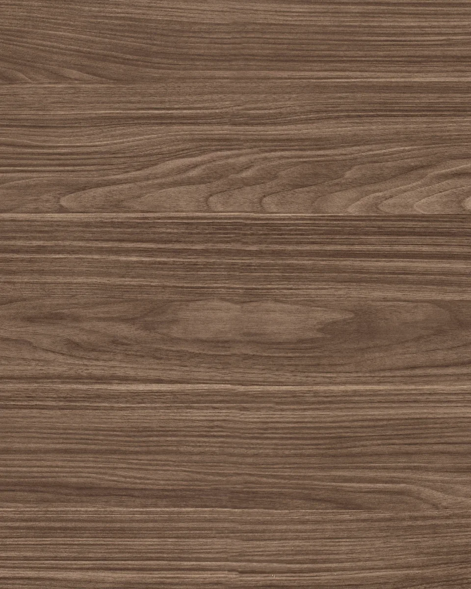
Teintes et matières
Tendances : beige, pierre veinée et bois – Lire le guide : Teintes et matières
-

-
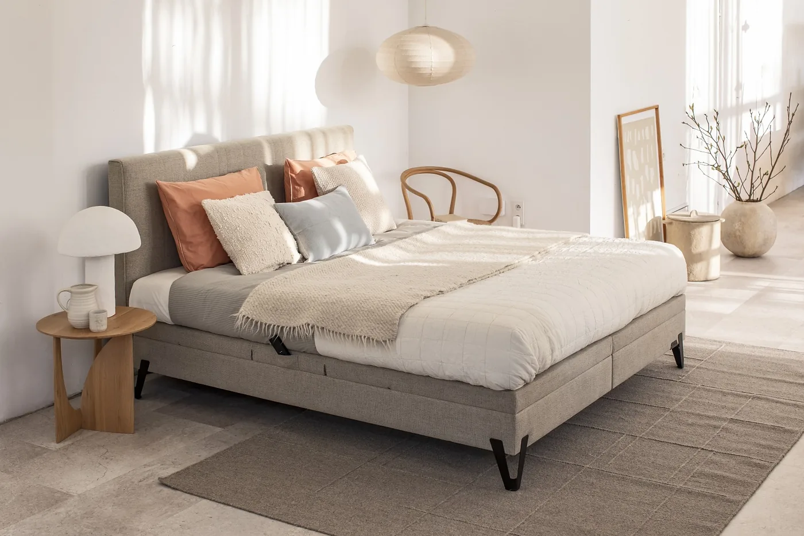


Une question ? Posez-la au magasin.
Retrouvez-nous à Leval-Trahegnies, entre Binche et La Louvière, du lundi au samedi. Venez librement, ou prenez rendez-vous pour préparer votre projet. Parking facile d’accès.
Partager cette page
- Lundi
- 13h30 – 18h30
- Mardi au samedi
- 10h30 – 18h30
- Dimanche
- Fermé
- Téléphone
- 064 46 07 72
- Livraison
- Par nos soins, dans le Hainaut (Binche, La Louvière, Mons, Charleroi…) et la province de Namur
Nous livrons aussi dans le nord de la France. Ailleurs, dont Bruxelles : sur demande.